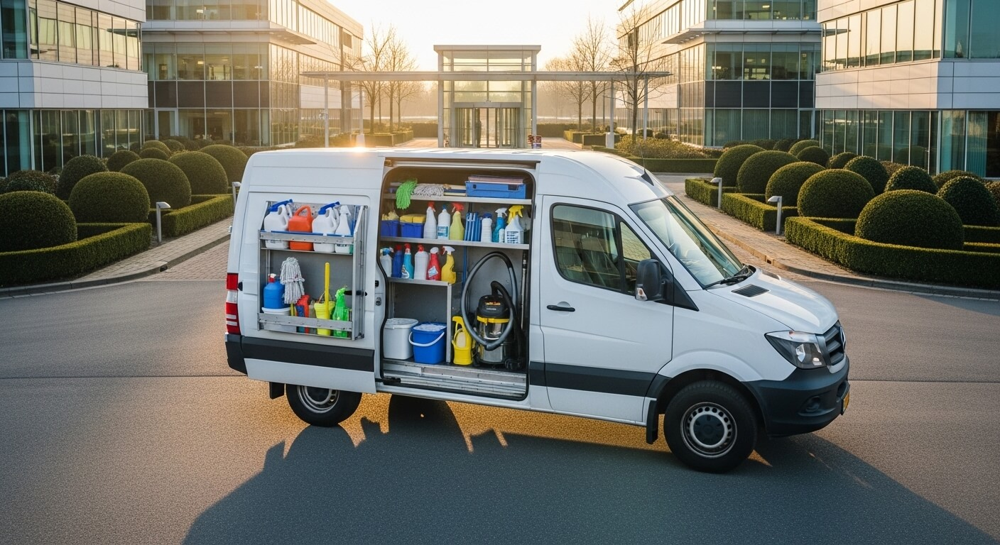
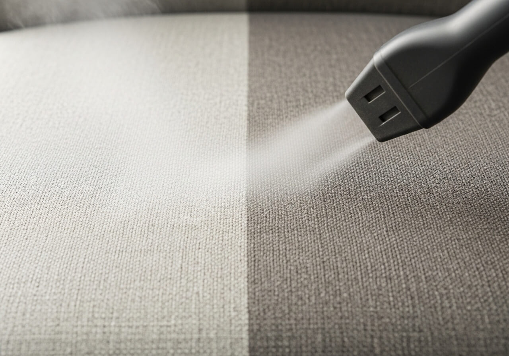
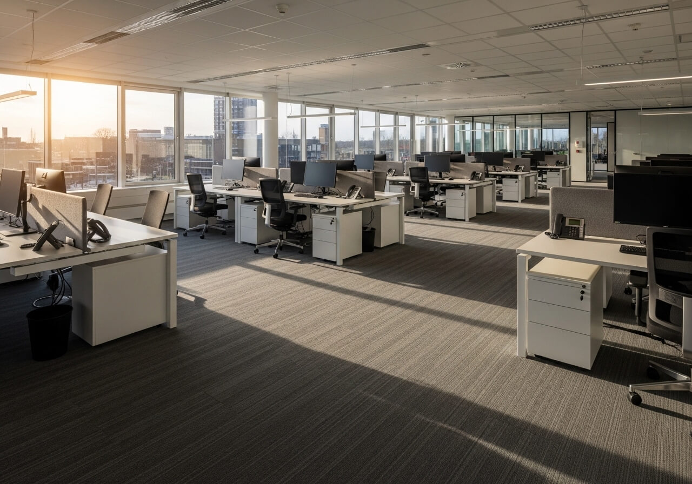

Duurzaam
Groen schoonmaken: zo maakt u het verschil
Ecologische producten zijn effectief, betaalbaar en beter voor uw gezondheid. Zo stapt u over.
Tips over ecologisch schoonmaken, vloeronderhoud en meer.
Ecologische producten zijn effectief, betaalbaar en beter voor uw gezondheid. Zo stapt u over.

Toetsenborden, deurklinken en koffiezetapparaten: deze plekken worden vaak vergeten.

Met de juiste techniek gaat uw PVC vloer jaren langer mee. Wij delen onze professionele tips.

Huisstofmijt, schimmel en pollen: zo houdt u uw woning allergeenvrij zonder chemicaliën.

Puur water zonder mineralen laat geen strepen achter. Zo werkt de techniek achter streepvrij glas.

De lente is het perfecte moment voor een grondige beurt. Zo plant u het efficiënt.